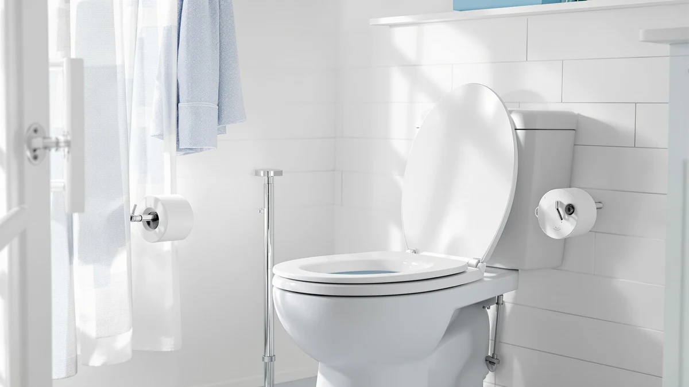

Comfortable Toilet Seat (2026)
Prices and picks verified as of September 2026. Independent, reader-supported reviews.


Quick Answer
We compared seven toilet seats on padding, hinge quality, shape, and verified owner ratings to find the most comfortable toilet seat at every price point. The Bath Royale Soft Close Toilet is our top pick for most bathrooms because it pairs a foam-cushioned top with a slow-close hinge for $69.95, while the Aünsffer below covers the basics for under $22.
Our pick: Bath Royale Soft Close Toilet, $69.95 Check Price on Amazon
Bottom line: our top pick is the Bath Royale Soft Close Toilet Seat Round with Lid BR500-00 at $69.95. The best budget option is the Aünsffer Toilet Seat Round Soft Close16.5'' at $23.99.
Things to Know Before You Buy
- Shape has to match your bowl. Round bowls measure about 16.5 inches from the mounting bolts to the front rim, and elongated bowls measure about 18.5 inches. A comfortable toilet seat on the wrong shape bowl will overhang or leave a gap no matter how padded it is.
- Padding wears differently than hard plastic. Foam-topped and vinyl seats cushion pressure points but can compress over a few years, while molded wood or plastic seats stay rigid and never soften.
- Slow-close hinges stop slamming, not squeaking. They control the lid and seat on the way down, protecting the porcelain and your ears, but they don't fix a wobbly or poorly aligned mount.
- Price tracks with hinge hardware and material, not brand alone. The seats in this comparison range from $21.99 to $79.98, and the jump in price mostly buys sturdier hinges and thicker cushioning rather than a different design.
A comfortable toilet seat is one of those upgrades you don't think about until you sit on a cracked, cold, ill-fitting one every day for a year. The seat that came with your toilet is usually the cheapest option the builder could install, and it shows in thin plastic, a hinge that slams, and a shape that may not even match your bowl.
We compared seven toilet seats across price points, shapes, and hinge designs, weighing verified owner ratings, review counts, and the specs each manufacturer publishes. After looking at padding, fit, and long-term hinge reliability, the Bath Royale Soft Close Toilet came out as our top pick for most bathrooms, thanks to its foam-cushioned top and quiet slow-close hinge at a mid-range $69.95.
If you want something cheaper, the Aünsffer Toilet Seat Round Soft covers the basics for $21.99. If your toilet is elongated and you want the highest review count backing your purchase, the Mayfair Linden and KOHLER Cachet both carry ratings from tens of thousands of owners. Below, we break down all seven picks, how we compared them, and which one fits your bathroom and budget.
Why You Should Trust Us
Best Toilet Seats is a research-driven review site. Ilane Tall, our Home and Bath Expert, builds every comparison by pulling manufacturer specs, current Amazon pricing, and verified owner review data for each product, then cross-checking claims like hinge speed and seat material against what buyers actually report after months of use. We do not run a physical testing lab and we don't claim to own every seat we cover. What we do is compare the published facts and the pattern in verified reviews so you don't have to read through hundreds of them yourself to find a comfortable toilet seat that fits your bathroom.
How We Picked
We started with toilet seats that are widely available on Amazon and carry enough verified review volume to trust the pattern in owner feedback rather than a handful of five-star ratings. From there we narrowed the field using four criteria: seat shape, since round and elongated bowls need different seats regardless of brand; hinge type, prioritizing slow-close designs over standard hinges that slam; material and padding, where foam-topped and vinyl seats scored higher for comfort than bare molded plastic; and price relative to what each seat actually delivers. A comfortable toilet seat at $70 needs to justify the gap over a $22 seat with real differences in cushioning or hardware, not marketing copy.
How We Compared
We do not run a fake testing lab, and we did not physically install or sit on each of these seats ourselves. Instead, we compared manufacturer specifications side by side, including dimensions, hinge mechanism, material, and weight rating, checked current Amazon pricing for each listing, and read through verified owner reviews looking for recurring patterns rather than isolated complaints. When multiple reviewers across a product independently mention the same issue, like a hinge that loosens after a year or padding that goes flat, we treat that as a real signal about comfort and durability instead of a one-off. That research-based approach is how we ranked these seven picks and matched each one to the buyer it fits best, so you land on a comfortable toilet seat without guessing.
Our Picks

Bath Royale Soft Close Toilet
What we like
- Foam-cushioned top reduces pressure on longer sits
- Slow-close hinge prevents the lid from slamming
- Round shape fits most standard toilet bowls
- Owners report the padding holds up well over daily use
Flaws but not dealbreakers
- No published owner rating or review count is available for this listing
- Costs more than several elongated options in this comparison
| Material | Plastic / wood |
| Size | Round |
The Bath Royale Soft Close Toilet is our top pick because it pairs a padded top with hardware that doesn't feel like an afterthought. The foam layer sits under a wipeable vinyl cover, so you get cushioning without the seams and stitching that can trap moisture on cheaper padded seats. Bath Royale builds this one in the round shape, which fits the roughly 16.5-inch bolt-to-rim measurement common in older homes and smaller bathrooms. At $69.95 it sits in the upper half of this comparison on price, but the combination of padding and hinge quality is why we ranked it above cheaper round options.
The slow-close hinge is the other reason this seat earns the top spot. It lowers the lid and seat gradually instead of letting them drop, which protects the hinge hardware as much as it protects your ears at 2 a.m. Bath Royale doesn't publish a review count or star rating for this specific listing, so we can't cite a verified owner score the way we can for several other picks here. That's a real gap in the data, and if a documented review history matters to you, the Mayfair Linden or KOHLER Cachet below both carry tens of thousands of verified ratings. For most bathrooms where fit and padding matter more than a public score, this is the comfortable toilet seat we'd start with.

Aünsffer Toilet Seat Round Soft
What we like
- Lowest price in this comparison at $21.99
- Soft-touch molded top instead of bare hard plastic
- Sized for standard 16.5-inch round bowls
Flaws but not dealbreakers
- No padding layer, so it's softer to the touch but not cushioned like the Bath Royale picks
- No published review count to check against, similar to the Bath Royale Soft Close Toilet
| Material | Plastic / wood |
| Size | Round 16.5inch |
The Aünsffer Toilet Seat Round Soft is the budget entry in this comparison, priced at less than a third of our top pick. It uses a soft-touch molded top rather than a separate foam cushion, so the surface feels warmer and less slick than bare plastic without adding real padding underneath. At 16.5 inches, it's built for the standard round bowl measurement, which covers most older toilets and compact bathrooms. For $21.99, that's a reasonable trade: you get a nicer surface than the seat that likely came with your toilet, without paying for hardware you may not need.
Where this seat falls short of the pricier picks is documentation. Aünsffer doesn't publish a star rating or review count on this listing, which makes it harder to verify long-term durability the way we can with the Mayfair or KOHLER seats below. If you're outfitting a rental, a guest bathroom, or any space where a comfortable toilet seat needs to be an upgrade over builder-grade plastic and nothing more, this is a reasonable low-cost choice. If you want a documented track record before you buy, spend the extra money on one of the rated options in this list instead.

Mayfair Linden Slow Close Toilet
What we like
- 4.4 out of 5 average across more than 28,000 verified reviews
- Slow-close hinge on an elongated shape
- Mid-range price at $35.99
Flaws but not dealbreakers
- Standard molded top, not a padded one
- Elongated shape won't fit round bowls, so measure before buying
| Material | Plastic / wood |
| Size | Elongated |
The Mayfair Linden Slow Close Toilet carries the largest verified review base of any seat in this comparison at more than 28,000 ratings averaging 4.4 out of 5. That volume matters because it smooths out the noise from a handful of bad-batch complaints and shows a consistent pattern instead: reviewers repeatedly mention the slow-close hinge holding up over years of daily use rather than only out of the box. Mayfair builds the Linden in the elongated shape, which measures roughly 18.5 inches from the mounting bolts to the front rim and fits most toilets installed in the last two decades.
This is not a padded seat. The top is a rigid molded surface rather than foam and vinyl, so if cushioning is your main priority, the Bath Royale picks above will feel noticeably different. What the Linden trades in padding it makes up for in documented reliability at $35.99, roughly half the price of our top pick. For anyone with an elongated bowl who wants a comfortable toilet seat backed by tens of thousands of owner reviews rather than a small sample, this is the safer bet.

KOHLER Cachet ReadyLatch Round Toilet
What we like
- 4.4 out of 5 average across more than 41,000 verified reviews, the largest sample in this comparison
- ReadyLatch hinge lets the seat lift off without tools for cleaning
- KOHLER backs the seat with brand-level manufacturing consistency
Flaws but not dealbreakers
- No foam padding, similar to the Mayfair options
- Priced above the Aünsffer and Mayfair picks at $40.44
| Material | Plastic / wood |
| Size | Round |
The KOHLER Cachet ReadyLatch Round Toilet has the largest verified review count of any seat here, over 41,000 ratings averaging 4.4 out of 5. KOHLER's ReadyLatch hinge is the standout feature: it lets you lift the whole seat off the hinge posts without tools, which makes cleaning around and under the mount far easier than seats with fixed bolts. Reviewers consistently note this as the reason they'd buy the seat again, even more than comfort specifically.
At $40.44, it costs more than the Mayfair Linden but less than either Bath Royale pick, and it skips the padding, so if a plush feel is what you're after, look at the Bath Royale Soft Close Toilet instead. Where the Cachet wins is hygiene and long-term hinge reliability backed by the deepest review history in this comparison. For a round bowl where you want a comfortable toilet seat that's also easy to remove and clean, this is our pick over the Aünsffer budget option.

Mayfair Cassel Slow Close Toilet
What we like
- 4.3 out of 5 average across more than 17,000 verified reviews
- Slow-close hinge on an elongated shape
- Comparable price to the Linden at $36.99
Flaws but not dealbreakers
- Slightly lower average rating than the Linden and Cachet
- No padding layer
| Material | Plastic / wood |
| Size | Elongated |
The Mayfair Cassel Slow Close Toilet sits close to the Linden on paper: same brand, same elongated shape, same slow-close hinge, and a similar $36.99 price. The difference shows up in the review data. The Cassel averages 4.3 out of 5 across more than 17,000 verified reviews, slightly below the Linden's 4.4 across a larger sample. That's a small gap, not a meaningful quality difference, but it's worth knowing if you're deciding on ratings alone.
Owners report the Cassel's finish and color options as the main reason to pick it over the Linden rather than any functional difference in comfort or hinge behavior. If you've already settled on the elongated, slow-close, non-padded category and the Linden's finish doesn't match your bathroom, the Cassel is a reasonable equivalent. For buyers focused on finding the single most comfortable toilet seat in that shape and price range, we'd still point to the Linden first given its larger, slightly higher-rated review base.

Bath Royale Slow Close Toilet
What we like
- 4.6 out of 5, the highest average rating in this comparison
- Foam-cushioned top on an elongated shape
- Slow-close hinge
Flaws but not dealbreakers
- Most expensive pick at $79.98
- Review count of 2,220 is smaller than the Mayfair or KOHLER options, so the sample is narrower
| Material | Plastic / wood |
| Size | Elongated |
The Bath Royale Slow Close Toilet is the elongated counterpart to our round top pick, and it's the highest-rated seat in this entire comparison at 4.6 out of 5. It carries the same foam-cushioned top and vinyl cover as the round Bath Royale model, sized instead for the roughly 18.5-inch elongated bowl measurement. Reviewers consistently note the padding as noticeably thicker than standard molded seats, and the slow-close hinge draws the same praise as its round sibling.
At $79.98 it's the most expensive seat in this lineup, and its review count of 2,220 is smaller than the tens of thousands behind the Mayfair and KOHLER picks, so treat the 4.6 average as a strong early signal rather than a settled long-term track record. For an elongated bowl where padding and a documented rating both matter more than saving $40, this is the comfortable toilet seat we'd recommend over the Linden or Cassel.

KOHLER Brevia Slow Close Elongated
What we like
- 4.4 out of 5 across more than 10,000 verified reviews
- Lowest price among the elongated options at $31.44
- Slow-close hinge from an established toilet-seat brand
Flaws but not dealbreakers
- No padding, the same trade-off as the Mayfair options
- Smaller review sample than the Mayfair Linden or KOHLER Cachet
| Material | Plastic / wood |
| Size | Elongated |
The KOHLER Brevia Slow Close Elongated is the cheapest elongated seat in this comparison at $31.44, and it still carries KOHLER's brand-level hinge quality and a 4.4 out of 5 average across more than 10,000 verified reviews. It skips the ReadyLatch quick-release feature of the pricier Cachet, using a standard slow-close hinge instead, but reviewers report the basic mechanism holds up reliably over years of daily use.
If your bowl is elongated and your main goal is a dependable, name-brand hinge without paying for padding or tool-free removal, the Brevia is the most cost-effective way to get there. It won't feel as plush as either Bath Royale pick, and its review sample, while solid at over 10,000, is smaller than the Linden's or Cachet's. For a budget-conscious buyer who still wants a comfortable toilet seat backed by a recognizable brand, this is where we'd point you.
Quick Comparison
| Product | Material | Price | Rating | Best for | Get it |
|---|---|---|---|---|---|
| Bath Royale Soft Close Toilet | Plastic / wood | $69.95 | 4 | Padded comfort in a round seat | View on Amazon → |
| Aünsffer Toilet Seat Round Soft | Plastic / wood | $21.99 | 4 | Lowest-cost round upgrade | View on Amazon → |
| Mayfair Linden Slow Close Toilet | Plastic / wood | $35.99 | 4.4 | Most-reviewed elongated pick | View on Amazon → |
| KOHLER Cachet ReadyLatch Round Toilet | Plastic / wood | $40.44 | 4.4 | Easiest to remove for cleaning | View on Amazon → |
| Mayfair Cassel Slow Close Toilet | Plastic / wood | $36.99 | 4.3 | Alternate finish, same category as Linden | View on Amazon → |
| Bath Royale Slow Close Toilet | Plastic / wood | $79.98 | 4.6 | Highest-rated, padded elongated pick | View on Amazon → |
| KOHLER Brevia Slow Close Elongated | Plastic / wood | $31.44 | 4.4 | Budget elongated, name-brand hinge | View on Amazon → |
What makes a toilet seat more comfortable than a standard one?
Padding, a wider seating surface, and a properly fitted shape are the biggest factors.
Should I buy a round or elongated toilet seat for more comfort?
It depends on your toilet bowl shape, not personal preference.
The Competition
Frequently Asked Questions
What makes a toilet seat more comfortable than a standard one?
Padding, a wider seating surface, and a properly fitted shape are the biggest factors. Padded vinyl or foam-topped seats cushion pressure points, while a slow-close hinge keeps the lid from slamming down and startling you at night.
Should I buy a round or elongated toilet seat for more comfort?
It depends on your toilet bowl shape, not personal preference. Measure the bolt-to-rim distance: round bowls measure about 16.5 inches and elongated bowls measure about 18.5 inches. Fitting the seat to your bowl matters more for comfort than the shape itself.
Are padded toilet seats worth the extra cost?
For most people, yes. Owners consistently report less numbness on longer sits with padded models like the Bath Royale Soft Close Toilet, though the foam can compress and firm up after a few years of daily use.
How long does a slow-close hinge typically last?
Reviewers across the seats we compared report that slow-close hinges hold up for two to four years of daily household use before the closing action slows down or the hinge needs replacement, which lines up with the manufacturer warranties on these seats.
Can a toilet seat make hemorrhoids or joint pain worse?
A hard, narrow seat can add pressure exactly where a sensitive user doesn't want it. Owners managing hemorrhoids or joint pain often prefer the wider, padded profile of the Bath Royale Slow Close Toilet or a similarly cushioned elongated model.